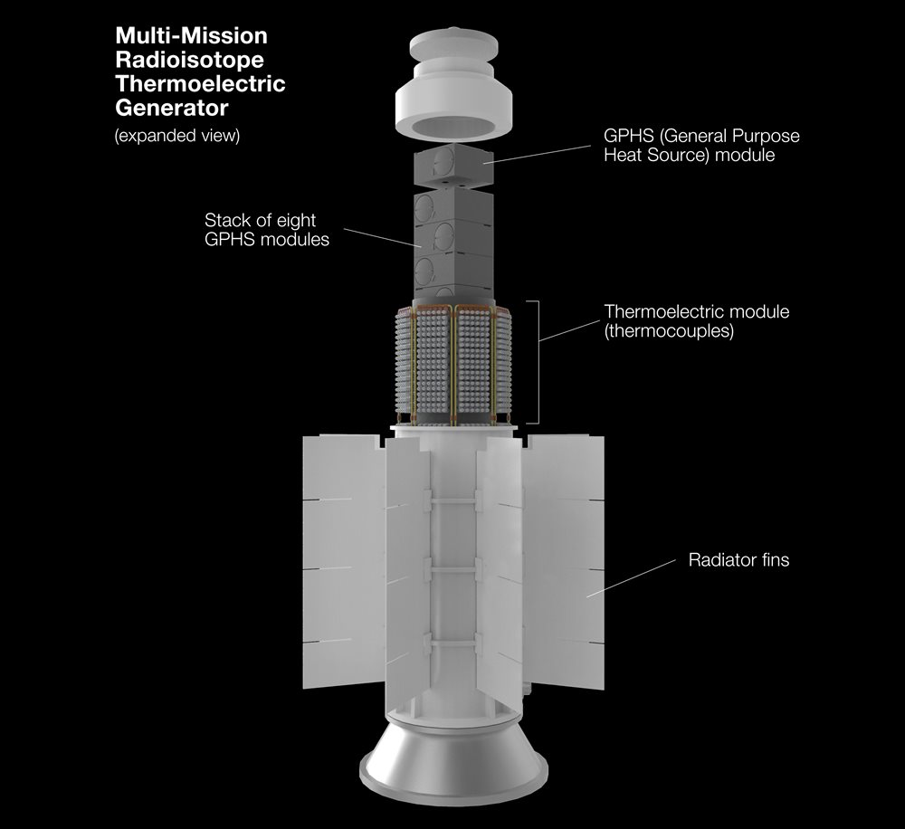

技术之巅：超远距离通信与数据传输
随着距离增加，信号衰减、延迟和带宽限制成为主要障碍。例如，新视野号从冥王星回传数据速率仅1-2 kbps，信号延迟数小时。
解决方案与原理：
- 光学通信（激光）： 利用激光束进行数据传输。相比传统无线电波，激光的波长更短，频率更高，这意味着在相同时间内可以传输更多的数据，数据速率可提高10-100倍。激光束的扩散性也更小，能量更集中，有助于信号在长距离传输中保持强度。例如，DSOC项目旨在显著提升通信性能和效率。
- 深空网络（DSN）与分布式容错网络（DTN）： DSN是由全球分布的巨型地面天线（如直径70米）组成的网络，用于接收和发送深空探测器信号。DTN则是一种“存储-转发”网络协议，旨在构建“太阳系互联网”，允许数据包在间歇性连接和长时间延迟下自动传输，无需实时连接。
- 高精度时间同步技术：： 通过原子钟和先进的算法，实现皮秒级的时间同步精度，有效补偿光速延迟、相对论效应和大气扰动带来的通信误差，确保数据传输的准确性。
- 纠错码： 使用卷积码、Turbo码和低密度奇偶校验码等技术，确保在信号微弱和干扰严重的情况下，数据传输的完整性。
图示：深空光通信激光束从航天器射向地球的艺术概念图。

技术之巅：长寿命能源系统
在远离太阳的区域，太阳能效率低下。放射性同位素热电发生器（RTG）是首选，但面临功率衰减和燃料供应问题。
工作原理与未来方向：
- 放射性同位素热电发生器（RTG）： 利用放射性同位素（如钚-238）衰变产生的热量。这些热量通过温差电效应（塞贝克效应）直接转化为电能，这一过程称为塞贝克效应。
- 斯特林放射性同位素发生器（SRG）：： 基于斯特林循环的外部燃烧发动机，利用放射性同位素产生的热量驱动活塞运动，再由线性发电机将机械能转化为电能。
- 核热推进（NTP）：：： 通过核反应堆加热液态推进剂（通常是液氢），使其膨胀成高温高压气体并高速喷出，产生巨大推力。
- 核电推进（NEP）：：：：： 核反应堆发电，电力用于驱动电推力器（如离子推力器）。电推力器通过电离惰性气体（如氙）并用电磁场加速离子产生推力。
- 小型裂变电源系统 (FPS)： 对于超过100千瓦的功率需求，FPS比RTGs更具成本优势。设计为冷发射并在轨道上启动反应堆，最大限度地降低放射性危害。
- 太阳帆与定向能推进：： 太阳帆通过利用太阳光压的动量来加速航天器，无需推进剂。定向能推进（激光帆）则涉及使用强大的地面或轨道激光来推动航天器。
图示：放射性同位素热电发生器（RTG）的实物图或模型图。
图示：展开的太阳帆航天器的艺术概念图。

技术之巅：高精度导航与自主运行
传统地球基导航方法在远距离精度下降。通信延迟要求航天器具备高度自主性。
创新方法与系统：
- X射线脉冲星导航（XNAV）：：：： 利用脉冲星发出的高度规律的X射线脉冲信号作为宇宙中的“灯塔”。通过测量来自多个脉冲星信号到达航天器的时间差，可以精确计算航天器的位置和速度，实现自主导航，尤其适用于远离地球的深空环境。
- 天体光谱测速法：：：：： 通过分析深空天体（如遥远恒星或星系）光谱中的多普勒频移，来精确测量航天器相对于这些天体的径向速度。结合其他导航数据，可以提高航天器在深空中的速度测量精度。
- 自主故障检测与纠正系统：：：：： 航天器搭载先进的机载计算机和人工智能算法，能够实时监控自身健康状况和性能。一旦检测到异常或故障，系统能自动诊断问题，并根据预设规则或学习到的经验采取纠正措施（如切换到冗余系统、重启模块），无需等待地球指令。
- 人工智能与机器学习辅助决策：：：：：： 利用AI模型分析海量传感器数据，识别模式，预测未来状态，并辅助航天器在复杂或不确定环境下做出最佳决策，例如优化轨道、调整姿态以规避障碍，或在科学观测中自主选择最有价值的目标。
图示：脉冲星导航示意图。

技术之巅：科学载荷与小型化
深空任务的科学广度直接取决于其载荷的质量和功率预算。通过微电子学和材料科学的进步实现科学仪器的小型化，是下一代探测器的关键推动力。
边界探索的关键仪器：
- 等离子体探测器： 测量等离子体的密度、组成、温度、速度，以及太阳风的相互作用。
- 磁力计： 探测和测量磁场的强度和方向，对研究日球层和星际磁场至关重要。
- 宇宙射线子系统（CRS）和低能带电粒子（LECP）探测器： 测量来自行星磁层和太阳系外源粒子的组成、能量和角分布。
- 尘埃探测器： 测量尘埃粒子的数量、速度、质量、电荷、飞行方向和组成，如星际尘埃分析仪（IDA）。
- 光谱仪： 通过吸收/发射光谱法分析物质组成，例如紫外成像光谱仪（UVIS）、可见光和红外测绘光谱仪（VIMS）、复合红外光谱仪（CIRS）和离子与中性粒子质谱仪（INMS）。
- 成像仪： 用于飞越成像，例如成像科学子系统（ISS）、全景相机（Pancam）和显微成像仪。
- 高能中性原子（ENA）相机：： 用于对日球层边界相互作用进行成像。
- 中性粒子质谱仪（NMS）：： 用于分析中性粒子组成。
- 莱曼-阿尔法光谱仪（LYA）：：： 用于探测氢原子分布。
小型化趋势：
- 微电子学、材料科学和制造技术的进步使得更小、功能更强的卫星和仪器成为可能。
- 小型化仪器可减少质量和功耗，为其他仪器腾出空间或降低发射成本，从而最大限度地提高单次任务的科学回报。
- 未来概念甚至包括“晶圆级”航天器，集成光学通信、成像、推进器、电源和传感器。
图示：小型化科学仪器阵列的特写图。

先行者之路：旅行者号
旅行者号：星际信使
1977年发射，首次飞越所有四颗外行星，并率先进入星际空间。
运行寿命: 45+ 年
关键成就: 发现木卫一火山、木卫二海洋潜力，直接测量星际介质。
- 穿越日球层顶：： 旅行者1号于2012年，旅行者2号于2018年相继穿越日球层顶，首次直接测量了星际空间的环境。
- 星际磁场：：：： 探测到磁场强度显著增加，且方向与日球层内部磁场不同，证实了进入星际空间。
- 宇宙射线：：：：：： 银河宇宙射线（GCRs）强度急剧增加，而太阳系内部的太阳宇宙射线则几乎消失。
- 星际等离子体：：：：：：： 首次直接测量到星际等离子体的密度，发现其比日球层内部稀薄但温度更高。
- 日球层形状：：：：：：：： 通过对日球层顶内外粒子和磁场的测量，帮助科学家更好地理解日球层的真实形状和与星际介质的相互作用。
- 克服挑战： 曾遭遇主推进器失效、备用系统堵塞和通信数据乱码等问题，但通过团队的创造性努力和冗余设计成功解决。
图示：旅行者号探测器的艺术概念图。

任务里程碑时间线
1977: 旅行者1号与2号发射
开启对外太阳系巨行星的首次详细探测。
1979-1989: 旅行者号飞越木、土、天、海
揭示了行星系统众多新特征。
2012 & 2018: 旅行者1号与2号进入星际空间
成为首批飞出日球层顶的人造物体。
先行者之路：新视野号
新视野号：柯伊伯带先锋
2006年发射，首次近距离探测冥王星和柯伊伯带天体阿罗科斯。
冥王星数据回传: 15+ 个月
关键成就: 揭示冥王星复杂地貌，探测最遥远天体。
- 飞越冥王星： 2015年首次近距离飞越冥王星及其五颗卫星，揭示了其复杂的表面地貌和直径。
- 飞越阿罗科斯：： 2019年飞越了阿罗科斯（2014 MU69），提供了原始星子的宝贵数据。
- 任务设计与故障应对：： 利用木星引力辅助缩短旅行时间。在冥王星飞越前曾遭遇计算机异常，但通过冗余系统和团队快速响应成功恢复。
- 数据回传挑战：：：： 由于距离遥远和传输速率限制，冥王星的6.25GB数据回传耗时超过15个月。
图示：新视野号探测器的艺术概念图。

任务里程碑时间线 (续)
2006: 新视野号发射
目标冥王星和柯伊伯带。
2015: 新视野号飞越冥王星
揭示了冥王星的复杂地质。
2019: 新视野号飞越阿罗科斯
近距离探测最遥远的原始星子。
中国行动：迈向深空的步伐
中国在深空探测领域取得了举世瞩目的成就，这些探索不仅拓展了人类的认知边界，也为未来更遥远的太阳系边际探测奠定了坚实的技术和科学基础。
月球与火星探测：深空技术基石
- 嫦娥系列月球任务：： 成功实现了绕月探测、月球软着陆、巡视探测以及月球采样返回。这些任务积累了远距离测控通信、自主导航、长期能源保障等关键深空技术，为未来更远距离的探测提供了宝贵经验。
- 天问一号火星任务：：： 一次性实现“绕、落、巡”三大目标，祝融号火星车开展巡视探测。火星任务对深空通信延迟、极端环境生存和自主运行提出了更高要求，其成功是中国深空探测能力的重要体现。
图示：中国月球或火星探测器艺术概念图。

迈向太阳系边际的未来展望
- 小行星探测：： 正在规划中的小行星探测任务，将进一步验证和发展深空自主导航、精确交会与伴飞等技术，这些对于未来探测柯伊伯带等小型天体至关重要。
- 木星系探测：：：： 对木星及其卫星的探测任务也在论证和规划中。木星系距离遥远，辐射环境复杂，对航天器的能源、通信和抗辐射能力提出严峻挑战，这些技术突破将直接服务于未来的太阳系边际探测。
- 星际探测概念：：：：： 中国科学家也正在积极探讨和论证更远期的星际探测任务概念，旨在深入日球层顶和星际空间，探索太阳系真正的边界。
中国深空探测坚持自主创新与开放合作并重，积极推动国际交流与合作，共同应对深空探索的挑战，为构建人类命运共同体贡献力量。